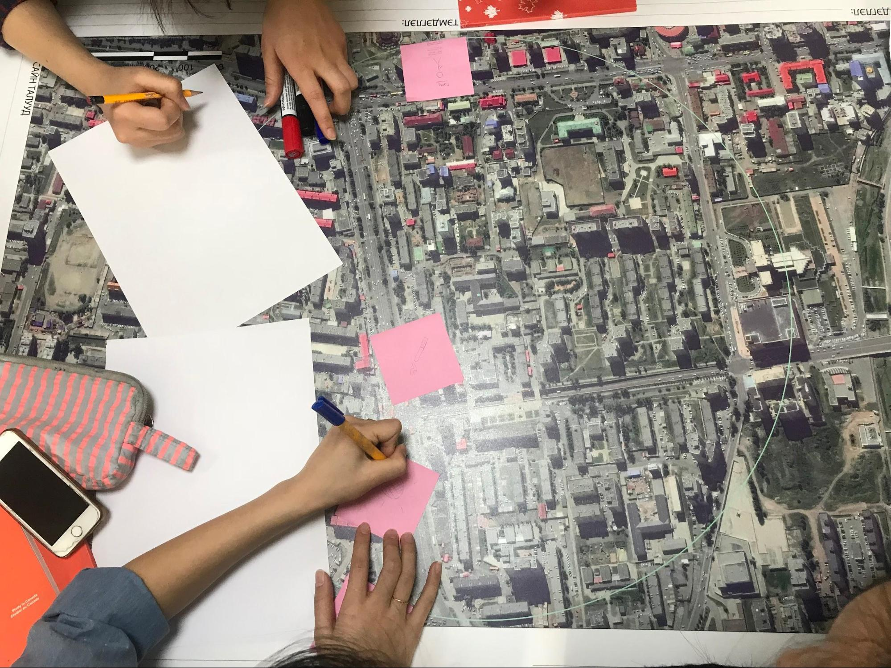

1.0. Introduction à la conception d_un projet de cartographie
Aperçu général
Dans cette section, les Gestionnaires de Projet trouveront des guides, des outils et
- Les considérations et les questions directives pour déterminer les facteurs du projet tels que la portée, l’échelle et la logistique ;
- Les ressources pour sélectionner le matériel ;
- Les guides et le matériel pour planifier les ateliers/formations.

- 1.1 Définition des besoins et des exigences soulève des questions auxquelles il faut répondre lors de la définition de la portée du projet, telles que l’objectif, l’échelle géographique et les entités à cartographier. Il permet de s’assurer que le projet tient compte des différents contextes et parties prenantes impliqués dans le projet.
- 1.2 Protection et Sécurité contient des questions directrices pour aider à planifier la logistique du projet et les problèmes de sécurité. Comme toutes les opérations sur le terrain comportent un certain niveau de risque et peuvent impliquer de nombreuses composantes mobiles, il est essentiel de procéder à un examen sur la sécurité, la protection et la logistique avant de commencer les travaux sur le terrain pour tout projet, quel que soit le contexte.
Ces deux premières sections fournissent des questions directrices et des considérations, cependant il est important de comprendre que chaque projet comporte des variables différentes qui peuvent ne pas être couvertes. Lors de la conception d’un projet, assurez-vous d’utiliser l’expérience passée, de consulter d’autres organisations et de rencontrer les parties prenantes afin de vous assurer que toutes les variables sont prises en compte.
- 1.3 Choix du Matériel fournit un guide sur les différents matériels, tels que les téléphones et les ordinateurs portables, qui pourraient être nécessaires pour un projet. En outre, HOT a fourni des listes de modèles spécifiques qui ont été utilisés dans le cadre de projets sur le terrain de l’organisation et dont l’adéquation a été démontrée.
- 1.4 Formations et Ateliers couvre les exigences relatives à l’organisation des formations et fournit des ressources telles que des exemples d’agendas et de matériel à fournir.
Ressources et lectures complémentaires
Outre cette boîte à outils, plusieurs guides ont été élaborés pour aider les équipes dans le processus de planification du projet, dont certains ont été inspirés pour l’élaboration de cette boîte à outils.
- Cartographie ouverte pour les ODD - L’équipe Humanitaire OpenStreetMap (HOT) a publié un guide pour lancer et développer des initiatives de cartographie ouverte aux niveaux national et local afin d’atteindre les Objectifs du Développement Durable (ODD). Ce guide peut être consulté à l’adresse suivante: https://hotosm.github.io/gpsdd-documentation/
- Guide du projet Open Cities - le Dispositif mondial de réduction des Catastrophes et de Relèvement (GFDRR) de la Banque mondiale et l’équipe Humanitaire OpenStreetMap (HOT) ont publié un guide qui peut être téléchargeable à l’adresse suivante : http://www.opencitiesproject.org/guide/.
- Boîte à Outils sur la cartographie Participative - L’équipe Humanitaire OpenStreetMap (HOT) a publié un guide pour les projets de cartographie ouverte dans le contexte des réfugiés. La boîte à outils complète peut être téléchargée à l’adresse suivante : https://www.hotosm.org/downloads/Toolkit-for-Participatory-Mapping.pdf